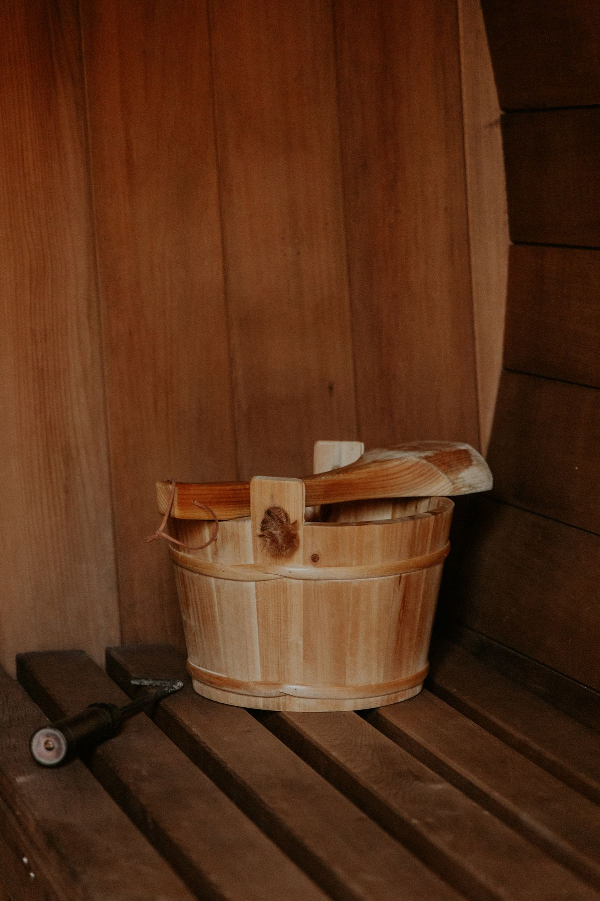

昭和十二年創業
親子三代で守ってきた、町の銭湯です。薪で沸かす熱いお湯と、壁いっぱいの富士山。仕事帰りの方も、子ども連れの方も、どうぞ気軽に。
1937昭和12年
初代が、町の人のために開いたのがはじまり。当時は井戸水を薪で沸かし、近所の家族が毎晩集まりました。
1978昭和53年
二代目が建て直し、浴室の壁に富士山のペンキ絵を描いてもらいました。今も同じ絵が残っています。
2026令和8年
三代目が、建物はそのままに、サウナと水風呂を新しくしました。昔からのお客さんも、若いお客さんも来てくれます。

松の湯の名物。薪で沸かした、肌がきゅっとする熱さです。
ゆっくり長くつかりたい方に。小さなお子さんもこちらへ。
ゆず・よもぎ・しょうぶなど、季節ごとに変わるお湯です。
浴室の壁の富士山は、昭和53年に描かれたもの。湯船につかると、ちょうど目の高さに見えます。
タオル・石けんの貸し出しもあります（各50円）。
月曜が祝日の時は営業し、翌日がお休みです。
浴室のペンキ絵を、そのまま手ぬぐいに。
1,200円
藍色ののれんの柄。お風呂セットがちょうど入ります。
2,500円
昔ながらの黄色い湯おけの、小物入れサイズ。
800円
番台で販売しています。遠くの方はオンラインショップからどうぞ（見本です。本物のサイトでは BASE や STORES などにつなぎます）。
子どもの頃から通っています。あつ湯に入ると、一日の疲れが抜けます。
サウナができてから、仕事帰りに寄るのが楽しみになりました。
子どもと一緒に、富士山を見ながらぬる湯に入るのが週末の習慣です。
西口を出て、商店街をまっすぐ。八百屋さんの角を右に曲がると、藍色ののれんが見えます。